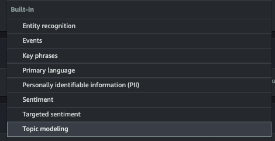
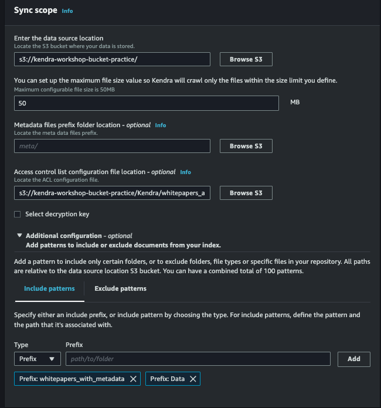
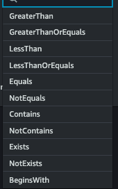
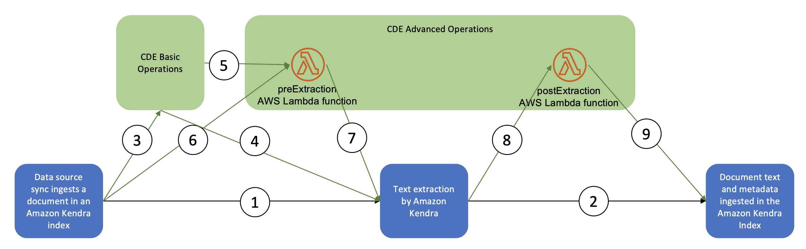
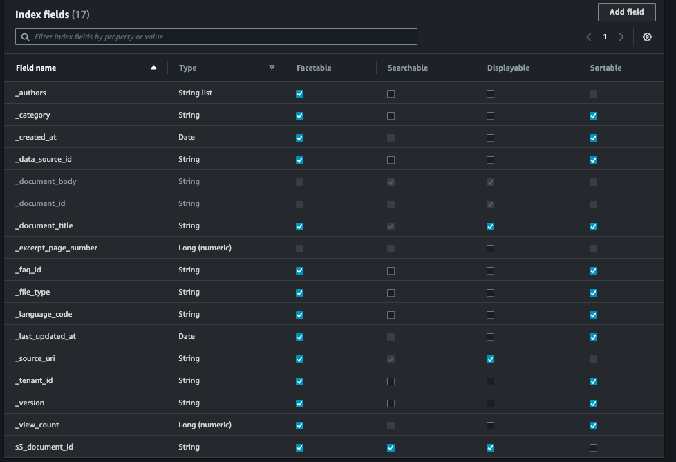

Amazon Kendra チュートリアル
こちらのチュートリアルを通して得た情報を整理する
https://docs.aws.amazon.com/ja_jp/kendra/latest/dg/tutorial-search-metadata-add-documents.html
チュートリアルの流れは以下
- S3にデータアップロード
- Amazon Comprehendでエンティティ抽出（S3から取得）
- metadataファイル化&S3に格納
- Amazon Kendra Index作成
- S3コネクタ作成&metadataパスを指定
- Indexの同期
- 抽出したエンティティがfacetとして利用できる
Amazon Comprehend
Amazonに組み込まれている文書解析サービス。Entity解析などが可能。

S3 コネクタ作成時の同期設定
s3のdatasource作成時に行うstep 3 同期設定の各種項目についてs3とどう連携しているのかを整理する

metadata files prefix folder location
参考：https://docs.aws.amazon.com/kendra/latest/dg/s3-metadata.html
metadataの中身はjson形式で、以下の通り
{
"DocumentId": "document ID",
"Attributes": {
"_category": "document category",
"_created_at": "ISO 8601 encoded string",
"_last_updated_at": "ISO 8601 encoded string",
"_source_uri": "document URI",
"_version": "file version",
"_view_count": number of times document has been viewed,
"custom attribute key": "custom attribute value",
additional custom attributes
},
"AccessControlList": [
{
"Name": "user name",
"Type": "GROUP | USER",
"Access": "ALLOW | DENY"
}
],
"Title": "document title",
"ContentType": "For example HTML | PDF. For supported content types, see Types of documents."
}
metadataのパスは指定しなくても、自動的にマッピングされる。指定した方が明示的で良い。
metadataのファイル名は「元のファイル名 + .metadata.json」
以下、どのようにマッピングされるかの事例
metadataのpathを指定しない場合、同じdocument path配下にmetadata.jsonがあると想定される（ないなら多分そのままmetadataがないと判断されるだけ）
Bucket name:
s3://bucketName
Document path:
documents
Metadata path:
none
File mapping
s3://bucketName/documents/file.txt ->
s3://bucketName/documents/file.txt.metadata.json
metadataのpathを指定する場合、そのpathの配下でかつdocument pathと同じ構成でmetadata.jsonがあrると想定される
Bucket name:
s3://bucketName
Document path:
documents/legal
Metadata path:
metadata
File mapping
s3://bucketName/documents/legal/file.txt ->
s3://bucketName/metadata/documents/legal/file.txt.metadata.json
Access control list configuration file location（ACL）
参考：https://docs.aws.amazon.com/kendra/latest/dg/s3-acl.html
aclファイルの中身はjson形式で以下の通り
[
{
"keyPrefix": "s3://BUCKETNAME/prefix1/",
"aclEntries": [
{
"Name": "user1",
"Type": "USER",
"Access": "ALLOW"
},
{
"Name": "group1",
"Type": "GROUP",
"Access": "DENY"
}
]
},
{
"keyPrefix": "s3://prefix2",
"aclEntries": [
{
"Name": "user2",
"Type": "USER",
"Access": "ALLOW"
},
{
"Name": "user1",
"Type": "USER",
"Access": "DENY"
},
{
"Name": "group1",
"Type": "GROUP",
"Access": "DENY"
}
]
}
]
Additional configuration > include patterns
この設定はS3のバケット内で、取り込みたいフォルダを選別したい場合、もしくは取り込みたくないフォルダを選別したい場合に利用する。何も設定しなければ、バケット内のすべてのフォルダ、ファイルが取り込まれる。
Custom Document Enrichment
参考：https://docs.aws.amazon.com/kendra/latest/dg/custom-document-enrichment.html
デフォルトで用意されている基本操作 or lambdaで処理を記述
デフォルト操作は、条件に一致したら、変更か削除が可能

lambda処理は、テキスト抽出前と後で2つ登録可能
lambdaの処理内でAmazon Comprehendなどを呼ぶ

index filedsの設定方法
index fieldsの設定方法は2通り
- {file}.{extension}.metadata.jsonを用意し、同フォルダに格納、もしくは別フォルダに格納&datasourceコネクタの設定時にパスを指定する
- Document Enrichment機能で、基本操作やLambdaを利用し、metadataを設定する
あらかじめAmazon Kendra自体が以下のindex fieldsをデフォルトとして用意している。
※しかし、デフォルトで対応しているもの以外は意図的に設定しないと検索時にfacetやsortなどに使用できない。

デフォルトで対応しているindex fields
- file_type
- PDFやtxtなど
- created_at
- ファイルの作成日時
- source_uri
- ファイルのurl
- data_source
- s3の場合はバケット名
- language_code
- datasourceコネクタ設定時に指定
- s3_document_id
- datasourceコネクタをs3にしたときに自動で設定
- ファイル名
その他のfield
これらはmetadataを意図的に作成しないと、facetとして使用できない
- author
- category
- data_source_id
- document_title
- excerpt_page_number
- faq_id
- tenant_id
- version
- view_count